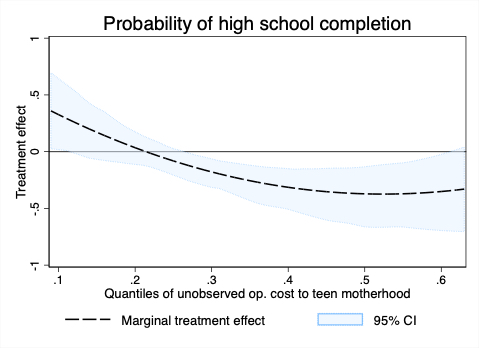

Abstract
I use deviations from the expected age at menarche to estimate the marginal treatment effects of teen childbearing on schooling and labor outcomes for Ecuadorian mothers and schooling and health outcomes for their firstborn children. Findings suggest that women with unobservable characteristics that make them less likely to become teen mothers are less likely to participate in the labor force, have fewer years of schooling, and are less likely to finish high school if they become teen mothers. Women with values of unobservables that make them more likely to become teen mothers do not have their schooling attainment negatively impacted and increase their labor force participation. I do not find evidence of effects on firstborn children. These findings help reconcile seemingly conflicting evidence from past studies and imply that there is potential to improve women’s outcomes by reducing teen childbearing rates when opportunity costs are sufficiently high. However, these findings counter the belief that teen childbearing has been a significant source of intergenerational transmission of low socioeconomic status.
In a nutshell the main result:

with Jere Behrman, John Maluccio, Reynaldo Martorell, Manuel Ramírez-Zea, Aryeh Stein and John Hoddinott
Abstract
Whether any policy-induced benefits on human capital endure over the long term in resource-constrained environments is a concern because human capital may require sustained investment not to fade away. However, there is evidence that improvements in early-life nutrition increase schooling attainment and income in adulthood. Can these impacts also benefit the next generation? In this paper, we study the intergenerational effects on children’s education of having a parent receive protein supplementation in early childhood in a low-income, rural setting. Using unique data that links two generations in a difference-in-difference framework, we show that children of early-treated male but not female participants of the INCAP longitudinal study —a nutritional intervention that occurred in Eastern Guatemala in the 1970s— have higher enrollment rates and schooling attainment than children of late- or non-treated fathers. We also find positive effects on boys’ non-verbal cognitive ability, but these estimates are imprecise. We find no impact on vocabulary tests.
Abstract
Malnutrition and access to pre-primary education rates worldwide, especially in LMIC, suggest that the extent of unequal opportunity is worrisome. Many people do not have optimal investments at critical periods in their early life, irreversibly limiting their ability to realize their full human capital potential by no fault of their own. As long as the occupation type and human capital are complements, the optimal allocation of talent occurs when the individuals with the highest human capital match with the most productive jobs. Thus, barriers to early-life human capital formation represent a source of inequality of opportunity that produces an inefficient allocation of talent across occupations. Through counterfactual analysis, this paper quantifies the aggregate implications that stem from talent reallocation across occupations when barriers to human capital formation in early life are reduced.